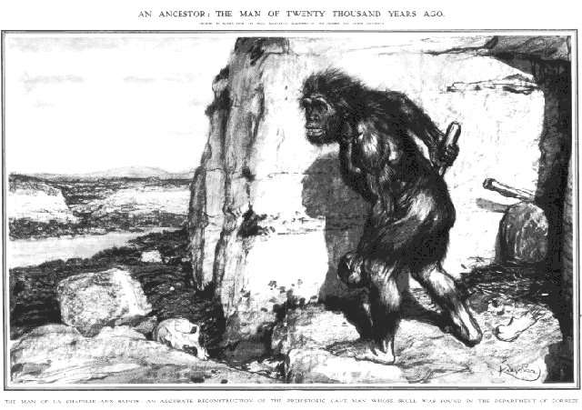
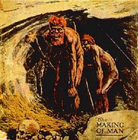
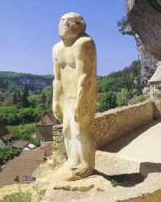
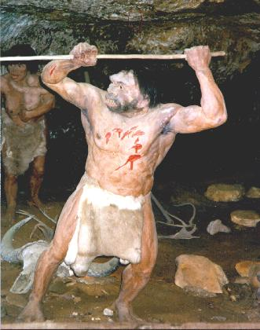
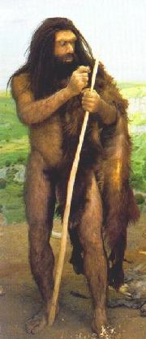
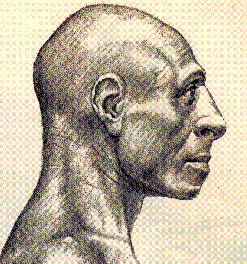
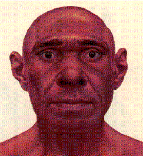

Images of Neandertals
Since they were discovered, the general public has always wanted to know what Neandertals look like, and many artists have attempted to show us. The results have been remarkably variable, and a few of them are shown on this page. Generally, older pictures tend to show Neandertals as more ape-like and primitive, while modern depictions are more like modern humans.For more examples, see The Neandertals, Trinkaus and Shipman 1992, or In Search of the Neanderthals, Stringer and Gamble 1995. (During 1997, the Musee National de Prehistoire in Les Eyzies, France, also had a comprehensive exhibition of Neandertal depictions.)
The following reconstruction of the La Chapelle-aux-Saints Neandertal skeleton, discovered in France in 1908, was published in L'Illustration in 1909, and in the Illustrated London News about a week later. It was done by Frantisek Kupka, based on the work of Marcellin Boule.
{kind=link}
An Ancestor: the Man of Twenty Thousand Years Ago
(text under main header is unreadable)

The Man of La Chapelle-aux-Saints: an accurate reconstruction of the prehistoric cave man whose skull was found in the Department of Correze
This awesomely bestial figure wildly exaggerates the primitiveness of Neandertals. While Neandertals would look unusual by our standards, with a short and very powerful build, receding chin and forehead, protruding midface and large nose, it's safe to say they looked nothing like this caricature.
Almost as bad is this poster for The Neanderthal Man, a B-grade movie from 1953 which clearly does nothing for the public image of Neandertals:


The illustration on the left (I am not sure whether they are meant to be Neandertals, or just generic cavemen) comes from The Outline of History by H. G. Wells, dated around 1920. Note that, following Boule, they are depicted with a stooped, non-erect posture. Wells, in his short story The Grisly Folk, described Neandertals as
"Hairy or grisly, with a big face like a mask, great brow ridges and no forehead, clutching an enormous flint, and running like a baboon with his head foreward and not, like a man, with his head up, he must have been a fearsome creature."
A famous Neandertal representation is the statue done by Paul Darde in 1930, which stands outside the Musee National de Prehistoire in the village of Les Eyzies, France. It gives an impression of sheer strength and endurance, which is probably quite accurate. This statue is more realistic than the previous representations, without the bent knees and stooped posture. It still has the big toe diverging from the others, an ape-like feature which Neandertals did not have.


The model on the left is from the cliff site of Roque St. Christophe, and is probably some decades old. The model on the right is by sculptor Stephen Brois, and was done for the American Museum of Natural History in the 1990's.
In recent years, portrayals of Neandertals become less sensationalistic, reflecting the fact that Neandertals were not ape-men, but were, despite minor anatomical differences, essentially like ourselves (which does not necessarily mean that they belonged to the same species as modern humans). These drawings are the work of scientific illustrator Jay Matternes, from the October issue of Science 81.


A page of Neandertal reconstruction images, copied from a now-vanished website.
{kind=link}
Neanderthal Museum near Dusseldorf, Germany
This page is part of the Fossil Hominids FAQ at the talk.origins Archive.
Home Page |
Species |
Fossils |
Creationism |
Reading |
References
Illustrations |
What's New |
Feedback |
Search |
Links |
Fiction
http://www.talkorigins.org/faqs/homs/savage.html, 22/04/2008
Copyright © Jim Foley
|| Email me